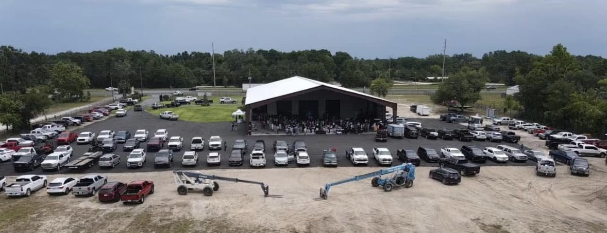

Whether your home is in town off US-19, out toward Manatee Springs or on acreage in rural Levy County, we manufacture the metal roofing and connect you with a licensed installer who works in the Chiefland area.
Chiefland is the crossroads of Levy County, where US-19 and US-98 meet among farms, springs and wooded homesites. Many properties here pair a house with barns, sheds or a shop, and owners want one roof material that holds up across all of them. Metal roofing is a natural fit.
Mission Metals Manufacturing is the supplier, not the roofing crew. We roll-form standing seam, 5V crimp and PBR metal roofing with matching trim. When you call, we connect you with an independent licensed roofer who serves Chiefland and builds with our materials.
Installers we refer are independent, licensed Florida roofing contractors. Your inspection, price, contract and workmanship are all between you and that contractor.
Installed to the Florida Building Code fastening pattern, metal roofing is designed to resist the uplift of storms moving in from the Gulf.
Metal sheds water fast and doesn't hold moisture, helping avoid the algae and rot common on shingle roofs in humid Levy County.
Light, reflective finishes bounce back much of the afternoon sun on homes and outbuildings alike.
Standing seam, 5V crimp and PBR cover site-built homes, manufactured homes, pole barns and workshops.
City or county: Properties inside Chiefland city limits are permitted through the City of Chiefland; unincorporated addresses go through the Levy County Building Department. Your licensed installer confirms and pulls the permit.
Rural acreage: Long driveways and outbuildings are common here. Mention every structure you want covered so the installer can plan delivery and quote it all at once.
Older decking: Older homes may have worn decking under the shingles. Ask the installer to include a decking inspection in your metal roofing estimate.

Our manufacturing facility in Old Town, Dixie County, Florida — where metal roofing for Chiefland homes is made.

House and outbuilding matched in green — a popular choice on Levy County acreage.

Materials delivered to the job site for the licensed contractor installing in the Chiefland area.

Silver standing seam roof installed by a licensed local contractor using Mission Metals materials.
Real Mission Metals photos. Mission Metals manufactures and supplies the metal roofing; roofs are installed by independent licensed contractors. Homes shown are in Florida and not necessarily in Chiefland.
An independent, licensed roofing contractor who works in the Chiefland area. Mission Metals Manufacturing makes and supplies the metal roofing; the contractor installs it and contracts directly with you.
It depends on where the property sits. Addresses inside Chiefland city limits are permitted through the City of Chiefland, while homes in unincorporated Levy County go through the Levy County Building Department in Bronson. Your licensed installer confirms the right office and pulls the permit.
Often, yes. Manufactured homes are common around Chiefland and rural Levy County, and metal roofing is a popular reroof choice for them. The installer checks the existing roof structure and recommends an approach that meets code for your home.
Yes. Many Levy County properties include pole barns, equipment sheds and workshops. PBR or 5V crimp metal roofing is practical for outbuildings and can be color-matched to the house so the whole property looks consistent.
Chiefland sits inland from the Gulf on Florida's Nature Coast, where long, humid summers encourage algae and moisture problems on shingle roofs. Coated metal roofing sheds water quickly and doesn't hold moisture the way shingle granules do.
Storms moving in off the Gulf can bring strong winds across Levy County. The Florida Building Code sets wind requirements by location and exposure, and your installer specifies the fastening pattern for your address.
Search the contractor's name or license number at myfloridalicense.com. We only refer contractors who hold an active Florida roofing license, and you can confirm it before you sign anything.
We connect property owners in Chiefland and across Levy County, including Bronson, Fanning Springs, the Manatee Springs area and rural properties along the US-19 / US-98 corridor.
How metal roofs handle Levy County wind, rain and lightning, and what to ask your installer.
Profile, gauge, tear-off, roof shape and access: the factors behind a local quote.